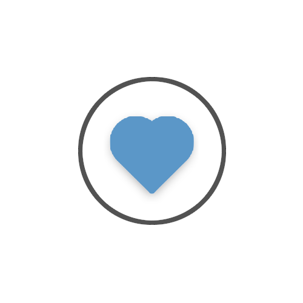

Antoine Megevand
Contact
07 81 29 54 45
antoinem1706@yahoo.fr
22 rue Etienne Dolet,
59221, Bauvin
Profil:
23 ans
Actuellement en Formation d’Audiovisuel Licence 3 à Valenciennes
Passionné de cinéma, musique et tout format audiovisuel
Possède le permis ainsi qu’une voiture

Outils maîtrisés :
Audiovisuel:
Formation :
-Pro Tools
-Avid Media Composer
-After Effect
-PovRay
-Final Cut (stage)
Autodidacte :
-Premiere Pro, Vegas Pro
-Photoshop
Musique:
Autodidacte :
-Piano
-FL Studio
Informatique:
-Programmation :
Formation :
-C, Python, HTML, CSS, javascript
Autodidacte :
-C++, LUA
Langues:
Anglais
Niveau B2-C1
Espagnol
Niveau A1-A2
2020
Licence Audiovisuel ISTV Valenciennes :
Réalisation de reportages et documentaires dans le cadre de la formation. Manipulations de tout le matériel audiovisuel ainsi que de logiciels professionnels.
Connaissances approfondies et rigueur dans tous les travaux audiovisuels.
Stage :
Troisième année – Wéo
Stage de six semaines. Aide pour la préparation du direct du soir :
création d’images d’illustration et accueil des invités. Mise en place d’un concours d’éloquence
en direct et maintien du bon déroulement. Alimentation d’un agenda vidéo hebdomadaire.
Initiative de création d’un programme d’automatisation avec python et FFMPEG en autonomie.
Deuxième année – Cap Informatique
Stage d’un mois. Chargé de post-production pour quatre vidéos de festivals et
spectacles en autonomie complète. Réalisation complète d’une publicité pour le magasin.
Projets Personnels :
Chargé de post-production pour court-métrage :
Chef monteur et création d’effets spéciaux dans le cadre d’un concours de cinéma à Valenciennes.
Montage pour un Bureau des Arts:
Montage des rushs donnés par le BDA du pôle des sciences de l’université de Grenoble.
Montage d’un documentaire :
Montage des rushs donnés par le Sessad de Lens pour la réalisation d’un petit documentaire.
Deux années de Licence Math-Physique à l’Université de Lille 1.
Compréhension des bases dans un grand nombre de domaines scientifiques.
Logique, adaptabilité, analyse et autonomie.
Bac S avec mention au lycée Voltaire à Wingles :
Bac S SVT option Informatique avec mention Assez Bien.